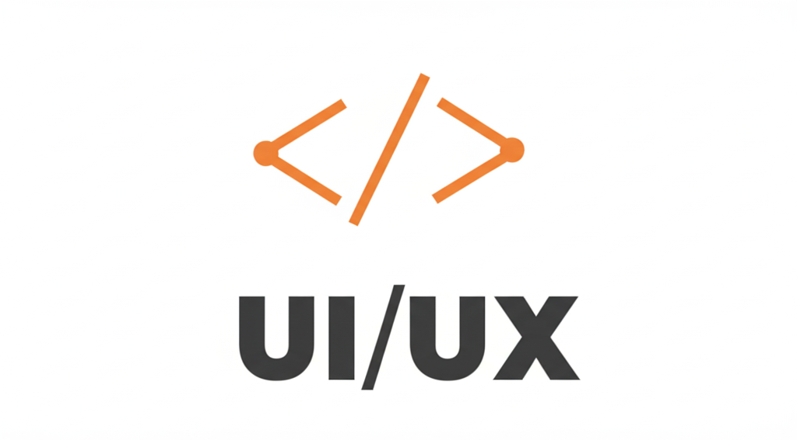

Layanan yang Saya Tawarkan
Berikut adalah beberapa keahlian dan layanan profesional yang saya sediakan untuk mendukung kebutuhan digital Anda.

HTML
Membangun struktur web yang rapi dan semantik menggunakan HTML untuk memastikan pengalaman pengguna yang optimal dan mudah dikembangkan.
CSS
Mengoptimalkan tampilan dan kenyamanan pengguna melalui styling CSS yang konsisten, responsif, dan estetis.
JavaScript
Mengembangkan interaktivitas dan fungsionalitas dinamis pada web dengan JavaScript untuk meningkatkan pengalaman pengguna secara menyeluruh.

Desain UI/UX
Merancang antarmuka dan pengalaman pengguna yang intuitif, estetis, dan berorientasi pada kebutuhan nyata pengguna.